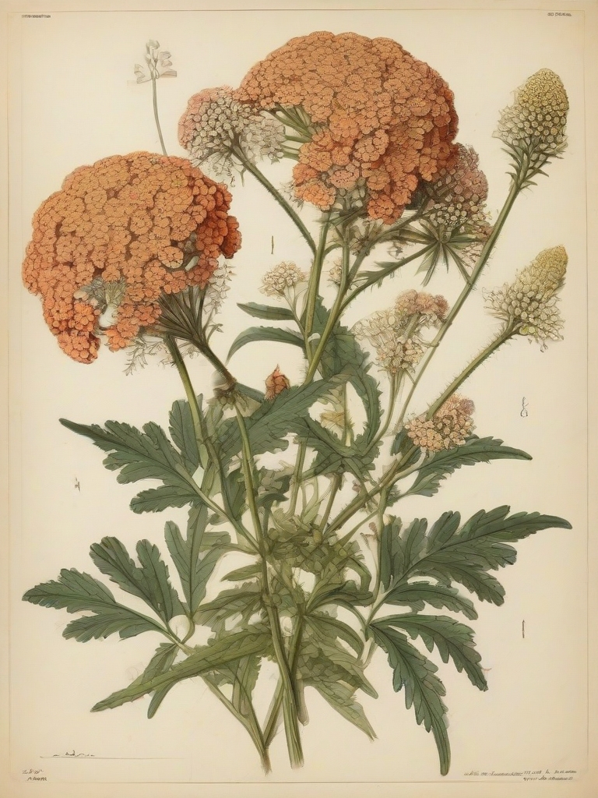
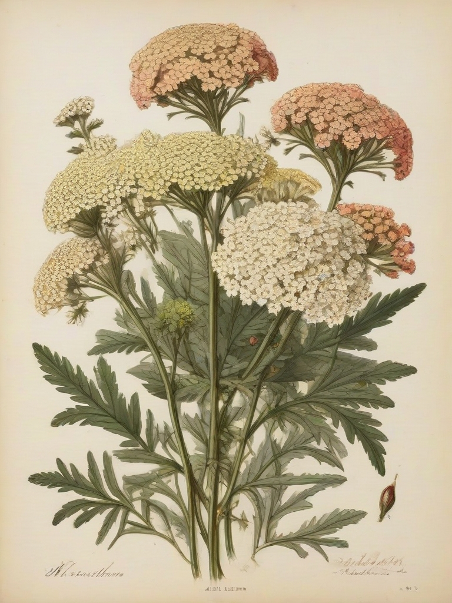
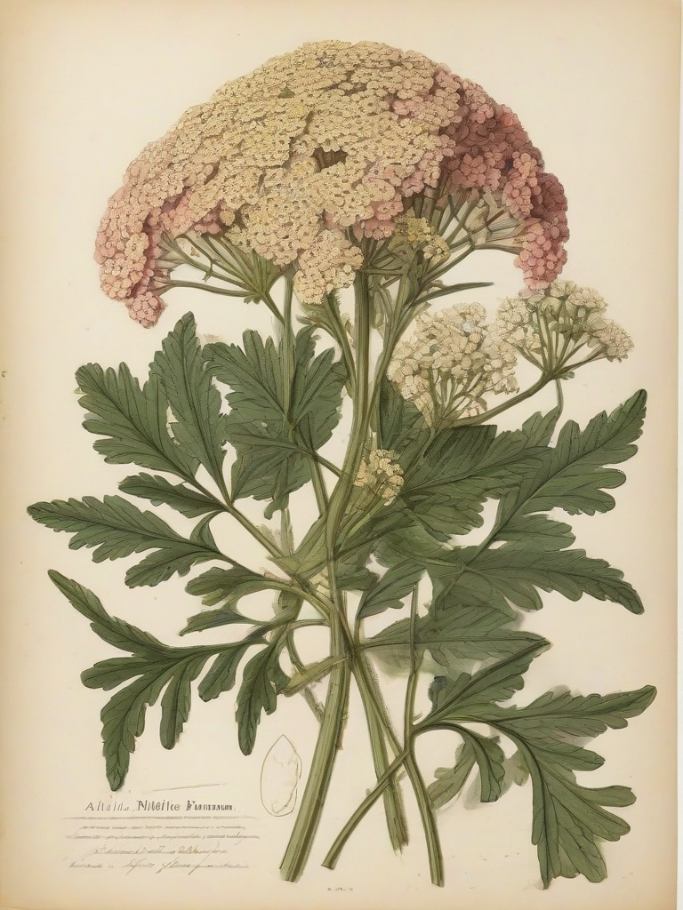
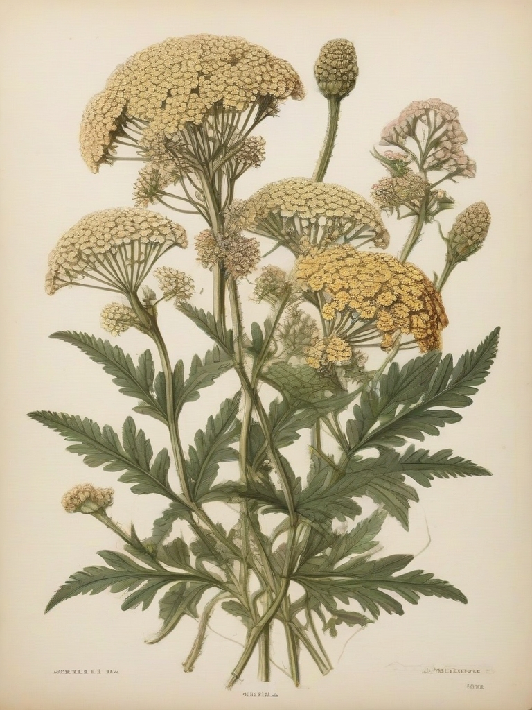
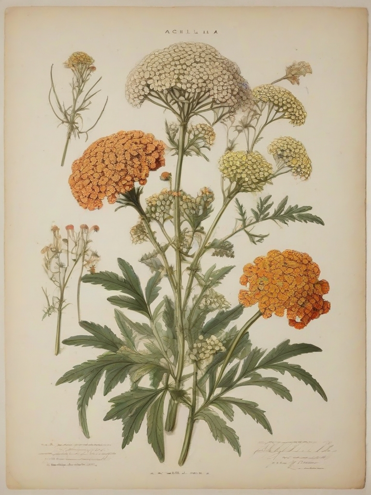

Yarrow (Achillea millefolium) has numerous medicinal properties that have been known since ancient times. It is commonly used in both traditional and modern medicine to treat various health conditions. Some of the major medicinal benefits of yarrow include its anti-inflammatory, antimicrobial, and antispasmodic properties. Yarrow is also believed to be effective in treating digestive issues such as diarrhea, dysentery, and stomach ulcers. Additionally, it has been found to have analgesic properties that can help relieve pain from headaches, toothaches, and menstrual cramps.
The medicinal constituents of yarrow include flavonoids, polysaccharides, and essential oils. The main flavonoid found in yarrow is apigenin, which has been shown to have anti-inflammatory properties. Other flavonoids found in yarrow include quercetin and kaempferol, both of which have antioxidant properties. Yarrow also contains polysaccharides, such as arabinans and xanthans, which are believed to have anti-inflammatory and antimicrobial properties. Additionally, yarrow is a rich source of essential oils, including citronellol, geraniol, and limonene, which have been shown to have analgesic properties.
The most commonly used parts of yarrow in medicine are the leaves and flower heads. These parts can be consumed raw or dried and used to make teas, tinctures, or decoctions. Yarrow is also available in supplement form as a powder or capsule. The most common medicinal preparation of yarrow is the tea, which can be consumed daily for up to 14 days. Additionally, yarrow is commonly used topically as a poultice or ointment to treat skin conditions such as acne, eczema, and psoriasis.
While yarrow is generally considered safe for most people, it can cause side effects in some individuals. These side effects may include nausea, vomiting, and diarrhea when consumed orally. Topical use of yarrow may also cause skin irritation, redness, and itching. Additionally, pregnant women should avoid consuming yarrow as it may increase the risk of miscarriage.
Yarrow should be used with caution in individuals who are allergic to pollen or other plant parts. It is also important to consult a healthcare professional before using yarrow if you have a medical condition, are taking medication, or are pregnant or breastfeeding. Additionally, it is recommended to use yarrow only as a supportive supplement and not as a substitute for conventional medical treatment.

Yarrow (Achillea millefolium) is a popular herb used in many culinary dishes around the world due to its unique flavor profile and nutritional benefits. It has been used for centuries as a seasoning, garnish, and medicinal ingredient in various cultures, including Chinese, Japanese, Native American, and European cuisines. Yarrow is known for its distinctive, slightly bitter taste that pairs well with many dishes, especially those containing meat, poultry, fish, and vegetables.
The flavor of yarrow can be described as mildly astringent and slightly bitter, similar to chicory or dandelion greens. It has a slightly peppery aftertaste that adds depth and complexity to dishes. Yarrow is also known for its fragrant aroma, which is reminiscent of fresh herbs like parsley or cilantro. The flavor profile of yarrow can be used to add a unique twist to traditional recipes, making it an excellent addition to salads, soups, stews, and sauces.
Yarrow is an edible plant that can be used in many ways in the culinary world. The leaves are often used as a seasoning or garnish, especially in savory dishes like soups, stews, and salads. The flowers can also be used as a decorative element or added to desserts for a unique floral flavor. Additionally, yarrow seeds and roots can be roasted and ground into a spice blend or used to make tea or tinctures.
When using yarrow in the kitchen, it's important to follow some simple tips to ensure that the herb is cooked properly and safely. First, wash the leaves and flowers thoroughly before using them in dishes. Next, chop the leaves into small pieces or tear the flowers into bite-sized pieces to release their flavor. When cooking with yarrow, be careful not to overcook it as it can become bitter and lose its flavor. Finally, store yarrow in an airtight container in a cool, dry place to preserve its freshness and flavor.
While yarrow is generally safe to eat and has many health benefits, it's important to be aware of its potential side effects and toxicity. Yarrow may cause an allergic reaction in some people, resulting in skin irritation, itching, or hives. It's also recommended that pregnant women avoid consuming yarrow due to its potential to interact with certain medications and increase the risk of miscarriage. Additionally, excessive consumption of yarrow can lead to stomach upset, diarrhea, and dehydration. Therefore, it's important to use yarrow in moderation and follow the recommended guidelines for safe use.

Growing Yarrow (Achillea millefolium) is relatively easy, thanks to its ability to thrive in a variety of conditions. To grow yarrow, start by choosing a location with well-draining soil that receives at least six hours of sunlight per day. Plant the seeds or seedlings about 12 inches apart and cover them with a thin layer of soil. Water the plants regularly during the first few weeks after planting to keep the soil moist. Once established, yarrow is drought tolerant and requires minimal watering. To keep your plants healthy and attractive, fertilize them once or twice a year with a balanced, water-soluble fertilizer.
Yarrow prefers full sun to partial shade and well-drained soil. It is drought tolerant and can thrive in a variety of soil types, including sandy, loamy, and clay soils. The plant grows best when the soil is slightly acidic, with a pH between 6.0 and 7.0. Yarrow requires regular watering during dry periods, but it is also tolerant of periods of drought. To keep your plants healthy, you should remove any dead or diseased leaves and stems as soon as possible.
Once established, yarrow requires minimal maintenance. Prune back the foliage to about six inches above the ground in early spring to promote new growth. Deadhead the flowers regularly to encourage more blooms and prevent the plant from spreading too aggressively. To keep your plants healthy, you should remove any dead or diseased leaves and stems as soon as possible. Yarrow is also susceptible to aphids and other pests, so it's important to monitor the plants regularly and take action if necessary.

Yarrow (Achillea millefolium) is a flowering plant that belongs to the domain Eukarya, kingdom Plantae, phylum Magnoliophyta, class Liliopsida, order Asterales, family Asteraceae, genus Achillea, and species millefolium. The common names for yarrow include Milkweed, Nettle-leaved yarrow, Wild yarrow, Mountain yarrow, Groundsel, Common yarrow, English yarrow, and Cow parsley.
Yarrow is a perennial herbaceous plant that grows to a height of 30-60 cm and has a rosette of foliage. The leaves are lanceolate, with serrated or lobed edges, and are arranged in an alternate pattern. The flowers are borne on tall stalks and have ray florets that are white or pink, with yellow or red centers.
There are several variants of yarrow, including the smooth-leafed yarrow (Achillea millefolium var. nodosa), the lobed-leafed yarrow (Achillea millefolium var. cervicornis), and the hairy-stemmed yarrow (Achillea millefolium var. hispanica). Smooth-leafed yarrow has round or oval leaves with smooth edges, while lobed-leafed yarrow has deeply lobed leaves. Hairy-stemmed yarrow has hairy stems and leaves.
Yarrow is native to Europe, Asia, and North America, and is widely distributed throughout the world. It grows in fields, meadows, and woodlands, and can also be found along roadsides and in urban areas. Yarrow prefers well-drained soil and full sun exposure, but can tolerate partial shade and moist conditions.
The life cycle of yarrow is biennial, meaning it completes two growth cycles in two years. In the first year, the plant produces a rosette of leaves, which die back over winter. In the second year, a new rosette of leaves grows and flowers are produced on a stalk that arises from the center of the rosette. The seeds are then dispersed by wind or animals.

Traditional medicine has been one of the primary uses for yarrow throughout history. Yarrow is known to have a variety of medicinal properties, including being an anti-inflammatory and antiseptic. It was used by ancient Greek medical writers like Galen to treat wounds, fevers, and digestive issues. In Chinese medicine, yarrow is used to treat conditions such as indigestion, dysentery, and chills. Additionally, yarrow has been used in traditional Native American medicine to treat a variety of conditions including anxiety, depression, and menstrual cramps.
In divination, yarrow has played an important role throughout history. In ancient Greece, it was believed that yarrow had magical powers and was used in divination practices such as the casting of lots. The leaves of the plant were often used to predict the future or to determine the outcome of a battle. In China, yarrow is known for its ability to communicate with the spirits and is often used in divination practices. Additionally, Native American tribes used yarrow in divination practices to connect with their ancestors and to receive guidance from the spirit world.
Throughout history, yarrow has been associated with a number of legends and myths. In Greek mythology, it is believed that yarrow was one of the first plants to grow on the battlefield after the Trojan War. It was also believed that the goddess Aphrodite used yarrow to heal the wounds of her lover, Adonis. In Native American folklore, yarrow is often associated with the spirit world and is believed to be a protective plant that can ward off evil spirits. Additionally, it is believed that yarrow has the power to bring good luck and prosperity, and is often used in rituals and ceremonies to attract positive energy.